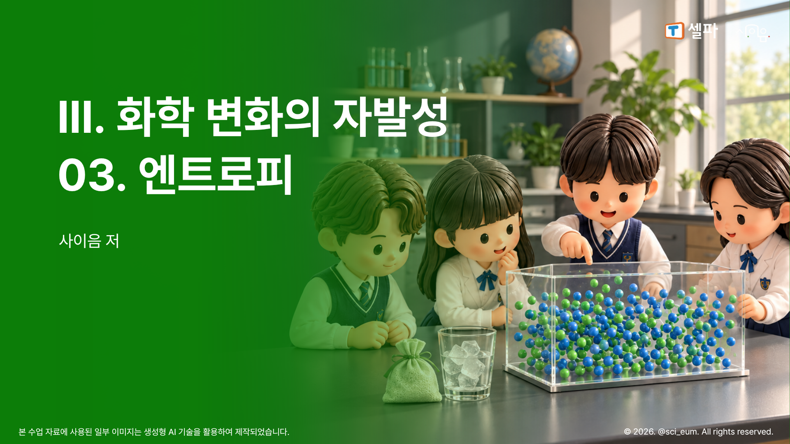
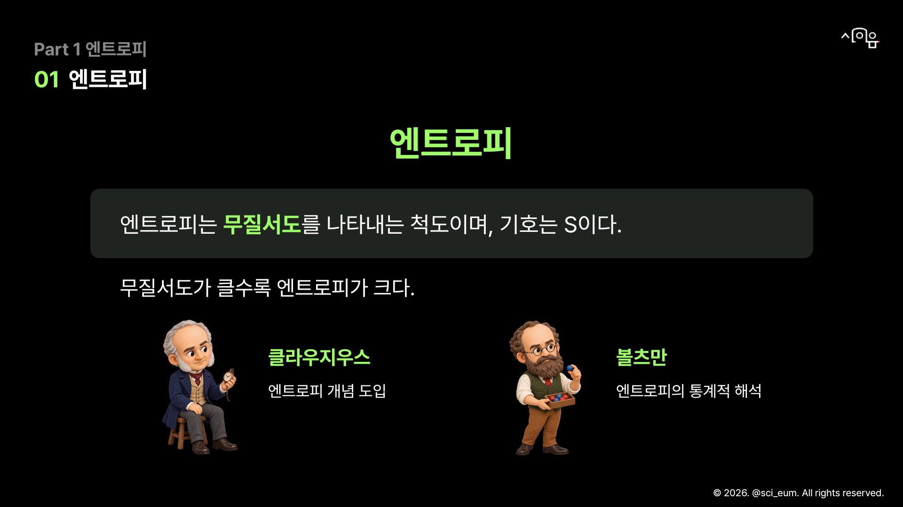
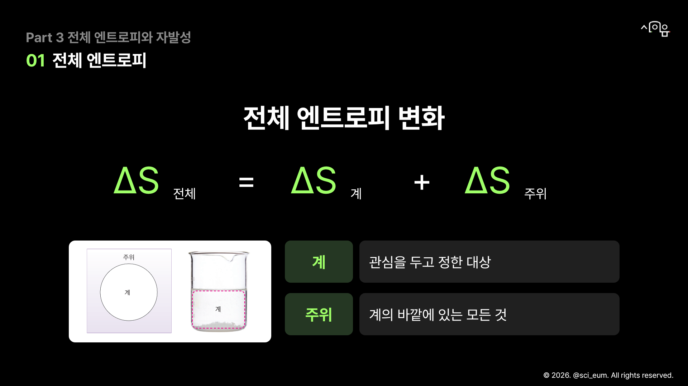
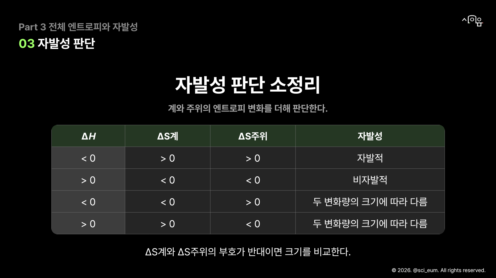

<!doctype html><html lang="ko"><meta charset="utf-8"><title>3-03 엔트로피 · 대표 5장 v05</title><style>body{margin:0;background:#151515;color:white;font-family:Arial,sans-serif}header{padding:24px 4vw}h1{font-size:24px}nav a{color:#9fff68;margin-right:22px}section{padding:20px 4vw}img{width:100%;display:block}p{color:#aaa}section h2{font-size:18px}</style><header><h1>3-03 엔트로피 · 검정·초록 대표 5장 v05</h1><p>전체 40장 중 실제 1·2·6·24·33장. 디자인 검토본.</p><nav><a href="#p1">1. 표지</a><a href="#p2">2. 동기 유발</a><a href="#p3">3. 엔트로피 정의</a><a href="#p4">4. 전체 엔트로피 관계식</a><a href="#p5">5. 자발성 비교표</a></nav></header><section id="p1"><h2>1. 표지 · 전체 계획 1장</h2></section><section id="p2"><h2>2. 동기 유발 · 전체 계획 2장</h2></section><section id="p3"><h2>3. 엔트로피 정의 · 전체 계획 6장</h2></section><section id="p4"><h2>4. 전체 엔트로피 관계식 · 전체 계획 24장</h2></section><section id="p5"><h2>5. 자발성 비교표 · 전체 계획 33장</h2></section>